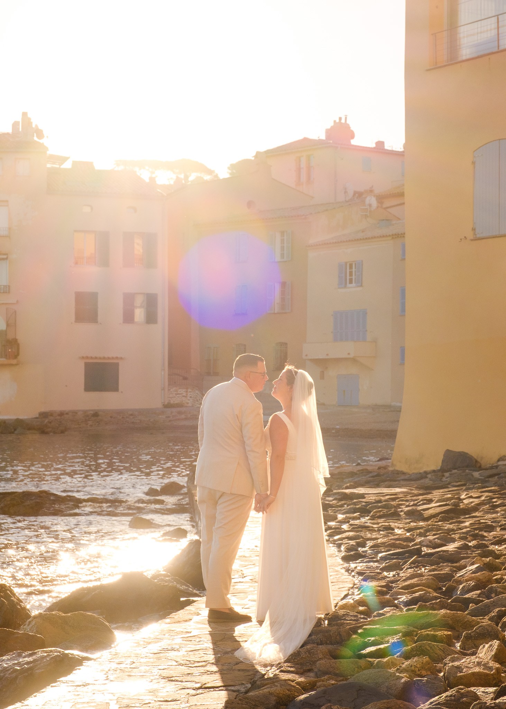
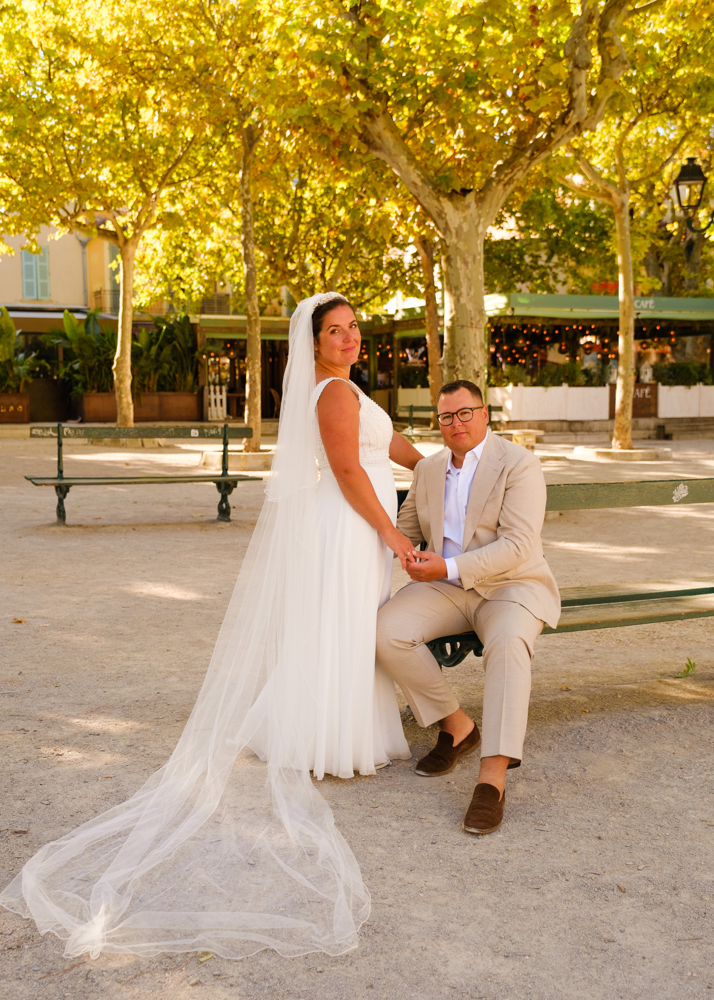
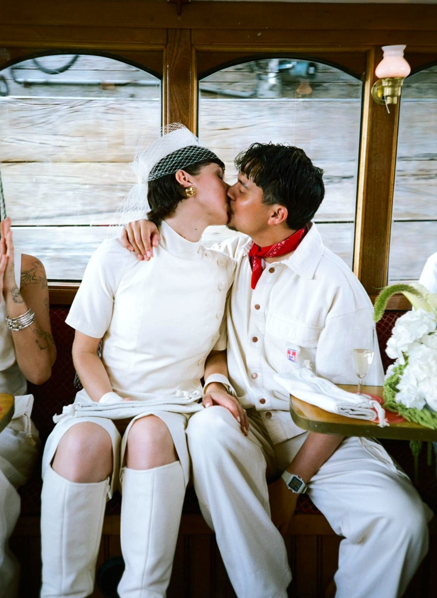
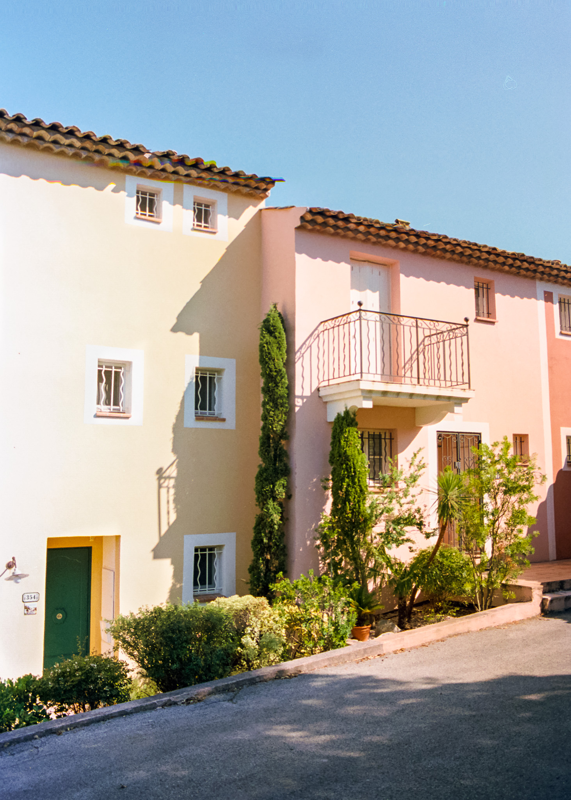
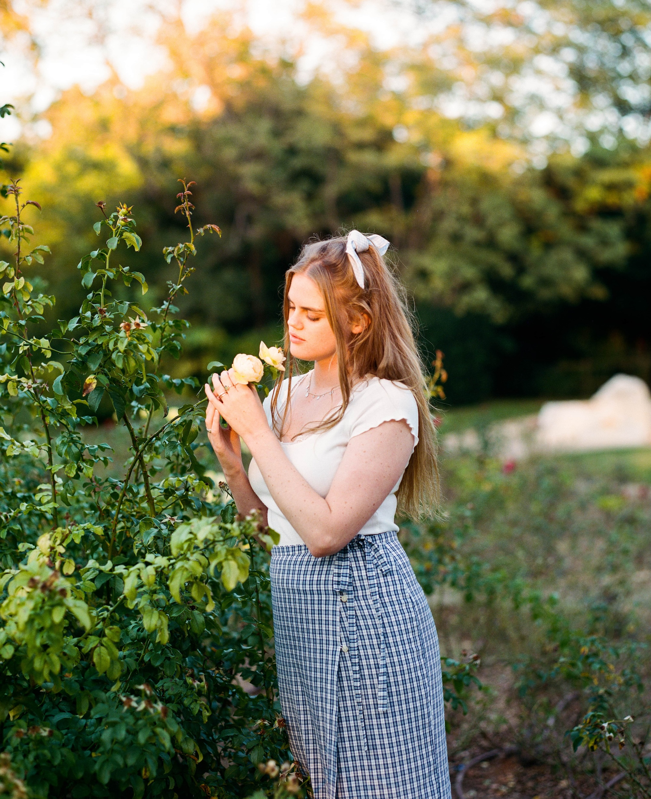

Wedding Photographer in the South of France: Editorial, Timeless & Analogue-Inspired Wedding Stories

After falling in love with the Provençal way of life during a summer stay, I quietly promised myself that one day I would move to this region. A few years later, that promise became reality, and I found myself living in Le Cannet near Cannes, and later in Marseille.
Immersing myself in everyday French life and its surroundings, it didn’t take long before I began dreaming of working as a photographer in the South of France. Last year, quite unexpectedly, I was asked to photograph a wedding couple shoot in Saint-Tropez. It felt like a gentle sign to turn my dream into reality.
If you’ve found your way to this page, chances are that you share a similar dream: capturing love in the beautiful Provence. The difference is that you’ll be in front of the camera, fully present in one of the most meaningful moments of your life: your wedding. If this resonates with you, there’s a good chance we might be a wonderful match.
As a Dutch wedding photographer in the South of France, I specialise in editorial, analogue-inspired wedding photography. On this page, you’ll find more about my approach, the types of wedding shoots I offer, and what working together can look like.
Curious to get a glimpse of the kind of photographs I take? At the very bottom of this page, you’ll find a slideshow with a selection of my work. Prefer to get in touch straight away? Simply click the ‘contact me!’ button on the right-hand side of your screen. I’m very much looking forward to hearing from you.
Why wedding photography in the South of France?
With its warmth, light and effortless sense of joie de vivre, the South of France offers a natural setting for celebrating life and love. It is a place where weddings often feel relaxed yet refined, and where photography can unfold in an intuitive, unforced manner.
What makes this region particularly special is its diversity. From mountains and canyons to lavender fields, coastlines, lakes and historic villages, the South of France provides an endless variety of landscapes and atmospheres for wedding celebrations and photography. A wedding on the French Riviera carries a very different rhythm from one in the Provençal countryside or a small civil ceremony in a historic town hall. Each setting comes with its own pace, colour palette and energy; elements that strongly influence the way a wedding day unfolds and how it is best photographed.
Another special quality of the region is that it's beautiful all year round. The Alps have flowers in spring, and beautiful orange backdrops during autumn. Summers along the coast are bright and sun-drenched, whereas winter reveals softer, more muted palettes. The unique beauty of each season allows you to choose a moment that truly reflects your favourite atmosphere, both for your wedding day and the photography that preserves it.
Being a wedding photographer in the South of France: a timeless, editorial style
While photographing my first wedding, I discovered that my most natural way of working is guided by a love for vintage romance and a cinematic, editorial atmosphere; images that feel both intuitive and carefully considered.
This is precisely what I aim for as a French Riviera wedding photographer. I create images that echo the timeless beauty of the region itself; photographs that feel like stills from an old film, gently artistic yet grounded in real moments. My focus is always on capturing the essence of the moment, the people, and the setting as a whole, allowing the story of the day to unfold organically.
From atmospheric couple shoots to elegant destination weddings
As a wedding photographer in the South of France, I offer several types of wedding shoots. Each one is approached with the same care, attention and timeless aesthetic, while allowing space for your plans, personalities and the setting to lead the way. Below, you’ll find an overview of the different options.
Couple shoots
A couple’s wedding shoot is an intimate photography session that focuses entirely on the connection between you and your partner, set against a location that feels meaningful to you. Many couples choose to wear their wedding attire, though this is by no means a requirement. Whether you envision something elegant, relaxed or entirely unexpected, the styling is always yours to define.
The purpose of a couple shoot is simple: to capture your relationship in a natural, personal and romantic way. If you already share your life with children or pets, they are more than welcome to join. We’ll discuss all details in advance, ensuring that your couple shoot in the South of France reflects your vision and story.
The wedding ceremony
Exchanging vows, signing the papers, sharing that first kiss and stepping outside hand in hand; the ceremony is filled with fleeting moments that deserve to be remembered. I offer wedding ceremony photography that documents these moments discreetly and thoughtfully, resulting in an elegant and honest visual record of the moment you make it official.
Wedding days and celebrations
For couples who wish to have their entire day documented, I also offer full wedding day photography. Whether you celebrate your day with a big party or an intimate gathering, I would be delighted to capture it. From the quiet anticipation before the ceremony to the celebrations that follow, I focus on capturing not only the people, but also the atmosphere, the setting and the small details that give your wedding its unique character.
My approach as a wedding photographer in the South of France
As a wedding photographer in the South of France, my aim is to create an experience that feels light, relaxed and genuinely enjoyable. From our first conversation, I’m there to help you imagine your wedding day or couple’s shoot with ease. You’re welcome to share dream locations, visual references, or any details that feel meaningful to you, all of which help add depth and intention to the photographs we create together.
When we meet somewhere in Provence or along the French Riviera, I’ll be ready to begin straight away. That said, I’m just as happy to start with a coffee, a short walk, or a quiet moment to settle in and get to know one another. Creating images always begins with creating comfort. My approach is guided by kindness, openness and warmth, and I hope you'll feel that from the first moment we meet.
Some people tell me they feel a little unsure in front of the camera, especially if they’re not used to being photographed. I guide gently where needed, but I never force moments. Instead, I work intuitively, allowing space for movement, conversation and stillness, so that your connection can unfold naturally. The result is photography that feels relaxed, and unmistakably yours.
Digital and Analogue Wedding Photography
My work as a wedding photographer is rooted in a love for both analogue and digital photography. Each medium brings its own rhythm, character and way of seeing, and they can be used for their own unique purposes throughout a wedding day. Rather than committing exclusively to one or the other, I love combining both, allowing the nature of the moment to guide the choice.
Film photography invites slowness, intention and a certain poetic unpredictability. Digital photography, on the other hand, offers flexibility, speed and reliability, making it ideal for dynamic moments and unfolding stories. By working with both, I am able to create wedding images that feel timeless and expressive, while also ensuring that no important moment is missed. Below, you'll find two lists that explain the benefits of film and digital photography.
When to choose film photography on your wedding day?
- A warm, timeless and distinctive atmosphere
- Perfect for intimate weddings, elopements and emotional moments
- An artistic, editorial quality with depth and character
- A gentle slowing down of the moment
When is digital photography the best choice?
- Ideal when moments unfold quickly and organically
- Well-suited for larger wedding days with many moving parts
- Greater flexibility and reassurance throughout the day
- Clean, refined images that remain versatile
The different cameras I use for wedding shoots
Each of the cameras I work with has been carefully chosen for its unique qualities and the atmosphere it creates. From the refined versatility of my digital camera to the distinct texture and depth of analogue film, every tool serves a specific purpose. Together, they allow me to approach each wedding with a sense of artistic freedom and technical confidence.
Fujifilm X-T4 - digital

Olympus MJU i - analogue point-and-shoot camera with built-in flash, 35mm, 36 shots per roll.

Pentax K1000 - Analogue, 35mm, 36 shots per roll

Pentax 67 - Analogue, medium format, 10 shots per roll, stunning quality. A little slower. Wonderful choice for special portraits.

My work area as a French Riviera wedding photographer

Having lived in both Cannes and Marseille, and having spent many holidays in and around Sainte-Maxime and Saint-Tropez, I am particularly familiar with the departments of Alpes-Maritimes, Var and Bouches-du-Rhône. Over time, this has allowed me to develop a strong sense of the region and its many distinct atmospheres.
That said, my work as a wedding photographer extends across the entire Provence-Alpes-Côte d’Azur region, as shown on the map above. From coastal towns and historic villages to inland estates and natural landscapes, the South of France offers an extraordinary variety of settings for wedding photography.
When desired, I am happy to share my local knowledge and help you find a photography setting that truly suits your wedding plans and visual wishes. I can also assist with practical arrangements when needed, making use of my knowledge of the French language. You don’t have to navigate this process on your own. I’m here to help you create the perfect séance photo de mariage.
I am equally open to travelling beyond the Provence-Alpes-Côte d’Azur region. As long as suitable arrangements are made for an overnight stay, I would be delighted to accompany you wherever your wedding story takes place.
Wedding photography packages and pricing
Every wedding day is different, and so is the way it unfolds. To offer clarity and guidance, I work with a number of thoughtfully composed packages, each designed to suit different types of wedding days and couple shoots, from intimate elopements to full wedding celebrations in the South of France.
If you’re unsure which option would suit your plans best, I’m always happy to think along and advise.
- Up to 3 hours – from €600* | Ideal for intimate wedding moments such as a civil ceremony, elopement, or champagne reception, as well as a couple’s shoot at a location of your choice.
- Half day (5 hours) – from €800* | Perfect for capturing several key moments, including preparations, the ceremony, and relaxed portraits. This option also lends itself beautifully to a couple’s shoot across multiple locations.
- Full day (8 hours) – from €1100* | Designed for complete wedding stories — from the quiet anticipation of the morning to the celebrations later in the day.
- Analogue photography – optional | €20 per roll + €20 development per roll (35mm or 120). This results in a surcharge of approximately €40 per roll.
* The listed prices do not yet include 9% dutch taxes. Travel expenses and potential overnight costs are also not included and will be calculated based on location. The prices do include professional editing and a private online gallery, easily shareable with family and friends. Each wedding is unique, and I’m happy to create a tailored proposal that reflects your plans, location and story.
Looking for a wedding photographer in the South of France?
If you’re dreaming of a wedding day in the South of France - whether along the French Riviera, in the Provençal countryside, or somewhere quietly tucked away in between - I would love to hear your story.
Feel free to reach out to share your ideas, ask questions, or simply explore whether my approach aligns with what you have in mind. You can contact me directly via the ‘contact me!’ button or through my e-mail address at the bottom of the page, and I’ll get back to you as soon as possible.